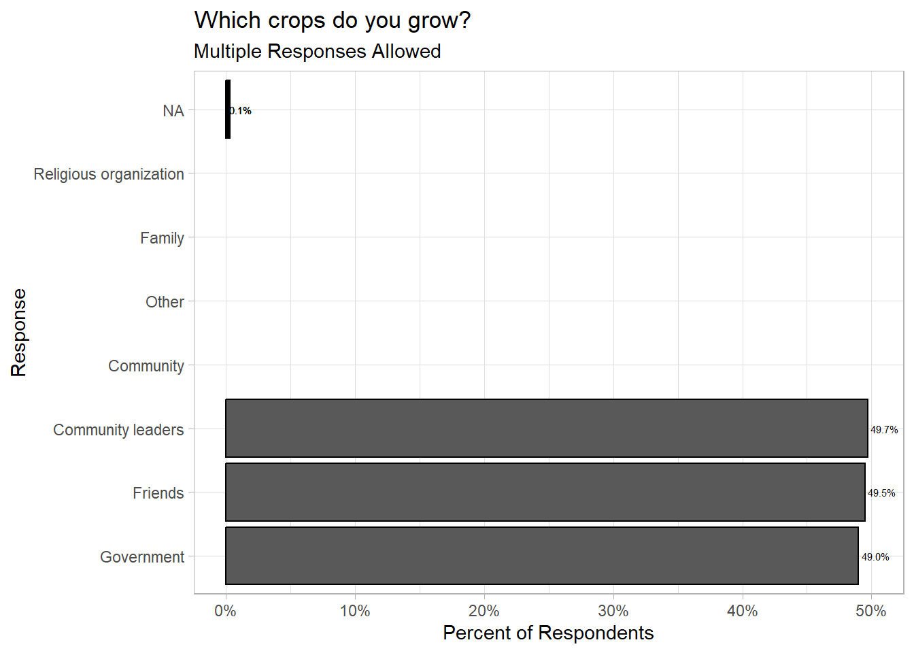
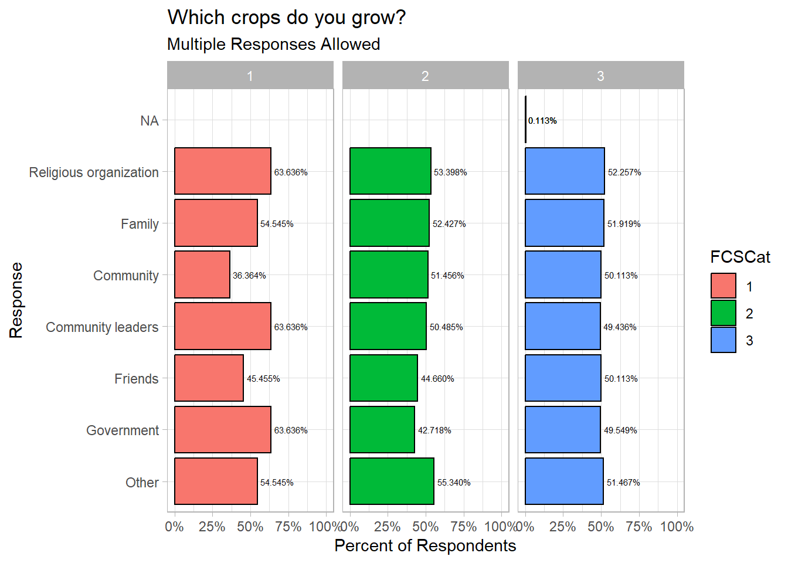

library(tidyverse)
library(tidyr)
library(readxl)
library(labelled)
library(expss)
# load data
indicators_data <- read_excel("input/indicators_data.xlsx")
# load XLSForm
survey <- read_excel("input/tool/MoDa_Tool.xlsx", sheet = "survey")
choices <- read_excel("input/tool/MoDa_Tool.xlsx", sheet = "choices")4 Data Analysis
Analysis are produced with a purpose and must respect certain imperatives to ensure final usage. this chapter will guide you through running analysis and produce results. You have collected and processed your data and now the fun starts. Data analysis is the practice of applying statistical and analytically tools to a dataset to serve actionable business insights.
4.1 Categorical Analysis
4.1.1 Select One
4.1.2 Select Multiple
multi_response_odk_single<-function(data,labelset,id_string=NULL,multicolumn=NULL,other_string=NULL,retain_empty=TRUE,language="English"){
if(!paste0("label::",language)%in%colnames(labelset)){
newlanguage<-gsub("label::","",colnames(select(labelset,contains("label")))[1])
warning(paste("language",language,"not found. Using first column labelled",newlanguage,"instead"))
language<-newlanguage
}
if((is.null(id_string) & is.null(multicolumn))|(!is.null(id_string) & !is.null(multicolumn))){
stop("Must include input for id_string or multicolumn")
}
if(is.null(multicolumn)){
data %>%
mutate(group=1) %>%
select(X_uuid,group,contains(id_string)) %>%
pivot_longer(contains(id_string),names_to = "value",values_to = "exist") %>%
filter(exist==1) %>%
mutate(value=str_remove(value,id_string)) %>%
select(-exist) %>%
full_join(
labelset,by=c("value"="name"))->long_responses
}
else{
data %>%
separate(multicolumn,sep=" ",into=paste0(multicolumn,1:(1+max(str_count(.[,multicolumn]," "))))) %>%
select(X_uuid,contains(multicolumn)) %>%
pivot_longer(contains(multicolumn),names_to = "selection",values_to = "value",values_drop_na = TRUE) %>%
select(-selection) %>%
mutate(group=1) %>%
full_join(
labelset,by=c("value"="name"))->long_responses
}
overall_respondents_bygroup <- data %>%
mutate(group=1) %>%
group_by(group) %>%
summarise(N_respondents=n())
long_responses %>%
mutate(count=ifelse(is.na(group),0,1)) %>%
mutate(group=1) %>%
group_by(group) %>%
mutate(N_responses=sum(count)) %>%
ungroup() %>%
select(value,group,label=contains(paste0("label::",language)),count,N_responses) %>%
group_by(value,group,label,N_responses) %>%
summarise(n=sum(count)) %>%
ungroup() %>%
full_join(overall_respondents_bygroup,by="group") %>%
mutate(per_responses=n/N_responses,
per_respondents=n/N_respondents) %>%
ungroup() %>%
select(value,label,n,per_responses,per_respondents,N_responses,N_respondents) %>%
arrange(desc(per_responses))->output
if(retain_empty==FALSE){
output<-filter(output,per_responses>0)
}
return(output)
}
multi_response_odk<-function(data,labelset,id_string=NULL,multicolumn=NULL,group=NULL,other_string=NULL,retain_empty=TRUE,language="English"){
if(!paste0("label::",language)%in%colnames(labelset)){
newlanguage<-gsub("label::","",colnames(select(labelset,contains("label")))[1])
warning(paste("language",language,"not found. Using first column labelled",newlanguage,"instead"))
}
if(!is.null(group)){
output<- data %>%
split(data[,group],) %>%
map(.f=multi_response_odk_single,labelset,id_string,multicolumn,other_string,retain_empty,language) %>%
list_rbind(names_to = group) %>%
suppressMessages() %>% suppressWarnings()
}
else{
output<- multi_response_odk_single(data,labelset,id_string,multicolumn,other_string,retain_empty,language) %>%
suppressMessages() %>% suppressWarnings()
}
return(output)
}labels<-filter(choices,list_name=="OtherCBTSrc")
# fixing the bug
indicators_data$HHAsstOthCBTRecName.100 <- as.character(indicators_data$HHAsstOthCBTRecName.100)
indicators_data$HHAsstOthCBTRecName.201 <- as.character(indicators_data$HHAsstOthCBTRecName.201)
indicators_data$HHAsstOthCBTRecName.202 <- as.character(indicators_data$HHAsstOthCBTRecName.202)
indicators_data$HHAsstOthCBTRecName.203 <- as.character(indicators_data$HHAsstOthCBTRecName.203)
indicators_data$HHAsstOthCBTRecName.204 <- as.character(indicators_data$HHAsstOthCBTRecName.204)
indicators_data$HHAsstOthCBTRecName.300 <- as.character(indicators_data$HHAsstOthCBTRecName.300)
indicators_data$HHAsstOthCBTRecName.999 <- as.character(indicators_data$HHAsstOthCBTRecName.999)
labels$name <- as.character(labels$name)
multi_response_odk(data=indicators_data,labelset=labels,id_string="HHAsstOthCBTRecName.")# A tibble: 7 × 7
value label n per_responses per_respondents N_responses N_respondents
<chr> <chr> <dbl> <dbl> <dbl> <dbl> <int>
1 300 Religious… 525 0.148 0.525 3549 1000
2 999 Other 521 0.147 0.521 3549 1000
3 201 Family 520 0.147 0.52 3549 1000
4 203 Community 501 0.141 0.501 3549 1000
5 204 Community… 497 0.140 0.497 3549 1000
6 202 Friends 495 0.139 0.495 3549 1000
7 100 Government 490 0.138 0.49 3549 1000multi_response_odk(data=indicators_data,labelset=labels,id_string="HHAsstOthCBTRecName.",retain_empty = FALSE)# A tibble: 7 × 7
value label n per_responses per_respondents N_responses N_respondents
<chr> <chr> <dbl> <dbl> <dbl> <dbl> <int>
1 300 Religious… 525 0.148 0.525 3549 1000
2 999 Other 521 0.147 0.521 3549 1000
3 201 Family 520 0.147 0.52 3549 1000
4 203 Community 501 0.141 0.501 3549 1000
5 204 Community… 497 0.140 0.497 3549 1000
6 202 Friends 495 0.139 0.495 3549 1000
7 100 Government 490 0.138 0.49 3549 1000# split it by admin
multi_response_odk(data=indicators_data,labelset=labels,id_string="HHAsstOthCBTRecName.",retain_empty = FALSE,group="ADMIN1Name")# A tibble: 35 × 8
ADMIN1Name value label n per_responses per_respondents N_responses
<chr> <chr> <chr> <dbl> <dbl> <dbl> <dbl>
1 Admin 1 999 Other 119 0.156 0.569 762
2 Admin 1 203 Community 113 0.148 0.541 762
3 Admin 1 204 Community l… 112 0.147 0.536 762
4 Admin 1 300 Religious o… 107 0.140 0.512 762
5 Admin 1 201 Family 106 0.139 0.507 762
6 Admin 1 202 Friends 103 0.135 0.493 762
7 Admin 1 100 Government 102 0.134 0.488 762
8 Admin 2 300 Religious o… 121 0.160 0.555 755
9 Admin 2 202 Friends 111 0.147 0.509 755
10 Admin 2 201 Family 108 0.143 0.495 755
# ℹ 25 more rows
# ℹ 1 more variable: N_respondents <int>multi_response_odk(data=indicators_data,labelset=labels,multicolumn = "HHAsstOthCBTRecName",retain_empty = FALSE,group="ADMIN1Name",language="English (en)") %>%
select(ADMIN1Name,Crop=label,n,`Percentage of Respondents`=per_respondents) %>%
mutate(`Percentage of Respondents`=scales::percent(`Percentage of Respondents`))# A tibble: 48 × 4
ADMIN1Name Crop n `Percentage of Respondents`
<chr> <chr> <dbl> <chr>
1 Admin 1 <NA> 762 364.593%
2 Admin 1 <NA> 701 335.407%
3 Admin 1 Other 118 56.459%
4 Admin 1 Community 113 54.067%
5 Admin 1 Community leaders 112 53.589%
6 Admin 1 Religious organization 107 51.196%
7 Admin 1 Family 106 50.718%
8 Admin 1 Friends 103 49.282%
9 Admin 1 Government 102 48.804%
10 Admin 1 <NA> 1 0.478%
# ℹ 38 more rowsmulti_response_odk(data=indicators_data,labelset=labels,multicolumn = "HHAsstOthCBTRecName",retain_empty = FALSE) %>%
#adding some lines so that no answer comes last and other selections are in reversing order with most popular at top
mutate(y_axis=reorder(label,n,sum,na.rm=T)) %>%
# mutate(y_axis=relevel(y_axis,ref="No answer")) %>%
#then using geom_col and some standard ggplot functions to make it look a bit prettier
ggplot(aes(y=y_axis,x=per_respondents))+
geom_col(col="black")+
geom_text(aes(label=scales::percent(per_respondents)),hjust=-0.1,size=2)+
scale_x_continuous(labels=scales::percent,limits=c(0,0.5))+
xlab("Percent of Respondents")+
ylab("Response")+
ggtitle("Which crops do you grow?",subtitle="Multiple Responses Allowed")+
theme_light()Warning in multi_response_odk(data = indicators_data, labelset = labels, :
language English not found. Using first column labelled English (en) insteadWarning: Removed 6 rows containing missing values (`position_stack()`).Warning: Removed 6 rows containing missing values (`geom_text()`).
multi_response_odk(data=indicators_data,labelset=labels,multicolumn = "HHAsstOthCBTRecName",retain_empty = FALSE,group="FCSCat") %>%
#adding some lines so that no answer comes last and other selections are in reversing order with most popular at top
mutate(y_axis=reorder(label,n,sum,na.rm=T)) %>%
mutate(y_axis=relevel(y_axis,ref="Other")) %>%
#then using geom_col and some standard ggplot functions to make it look a bit prettier
ggplot(aes(y=y_axis,x=per_respondents,fill=FCSCat))+
geom_col(col="black")+
facet_wrap(~FCSCat,nrow=1)+
geom_text(aes(label=scales::percent(per_respondents)),hjust=-0.1,size=2)+
scale_x_continuous(labels=scales::percent,limits=c(0,1))+
xlab("Percent of Respondents")+
ylab("Response")+
ggtitle("Which crops do you grow?",subtitle="Multiple Responses Allowed")+
theme_light()Warning in multi_response_odk(data = indicators_data, labelset = labels, :
language English not found. Using first column labelled English (en) insteadWarning: Removed 6 rows containing missing values (`position_stack()`).Warning: Removed 6 rows containing missing values (`geom_text()`).
4.2 Numerical Analysis
4.2.1 Averages
4.2.2 Mean/Medium
4.3 Statistical Significance Tests
4.4 Survey Weights
weighing survey respondents are adjusted to better represent the target population. to do so, the weight given each respondent is adjusted to represent the number of similar respondents in the target population.
weights can be used for different reasons. in most of the cases, we will use